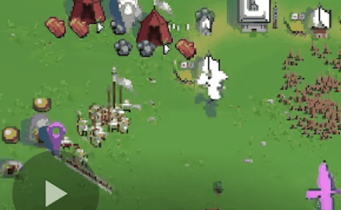
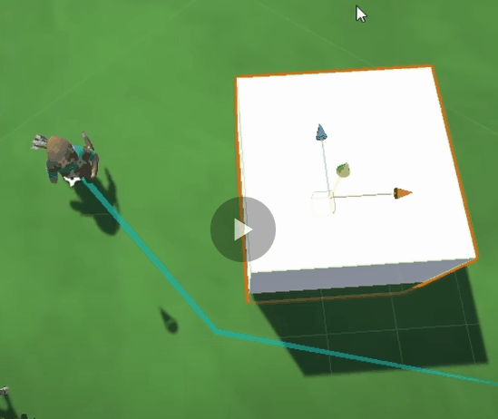
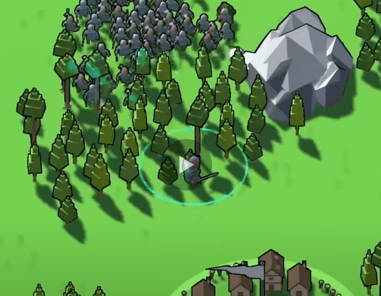
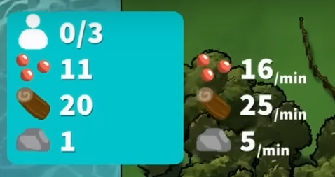
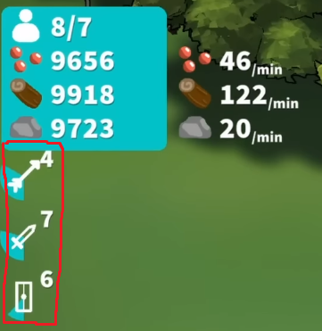
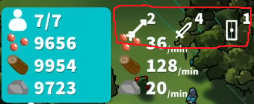
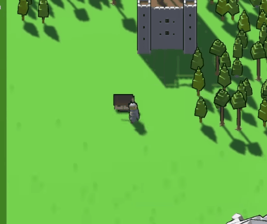
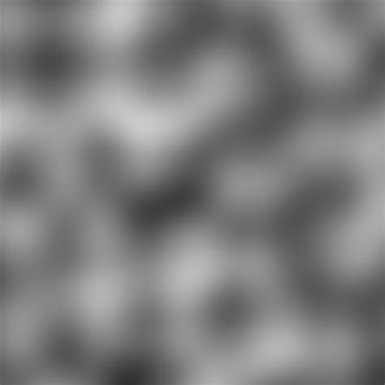
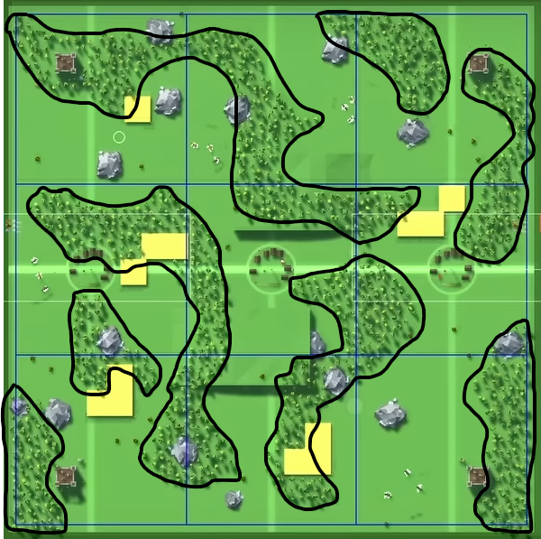
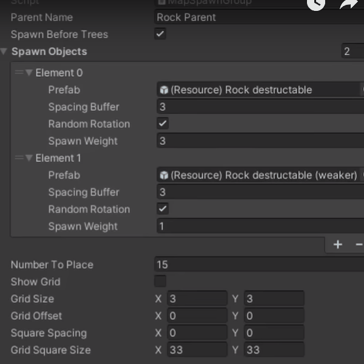

Hi I'm Max.
I'm a 23 year old game programmer and
designer, and I've been making games for
years. I published my first app on the Google Play store in 2016, and
I'm currently working on an assortment of different projects with a focus on finding a job in the tech
space and bettering myself as a programmer and devloper.
I built this portfolio website to showcase my abilities as a
web developer. Here, you can explore some of the projects I've
created using skills I've developed over years of determined self-learning. I wanted to make something
unique and since I make games, I thought it would be cool to make a website that feels like a game. I
hope you enjoy it!
I have a strong perseverance for
learning new things and
taking on challenges, and I always like to put some extra time
in polishing my creations, to make sure the creative vision is achieved in the best possible way. I've
always been extremely curious in the technical side of games,
and sometimes this curiosity has led me to projects I won't be able to formally mention here... cough.
If you have any questions please feel free to contact me :)
Check out some more of this website
Corner Kingdoms
Corner Kingdoms is a splitscreen RTS game where players build up their kingdom and fight against their
opponent. The game is built in
Unity and started because I wanted to expand a previous similar
project named
Birds and Blades. The game is currently in development.
- Exciting 2-4 player gameplay
- Fight in teams or every man for themselves
- Procedurally generated world every game
- Simplified RTS style gameplay
- No limit to army size. Bigger army, better person.
- Resource graph after the game ends
I have a couple development videos on the process of making this project.
Mechanics with a theme of simplicity.
Movement
Players and units alike move around the map on a
Unity NavMesh. This allows for easy pathfinding and
movement. As a comparison, the previous game I made,
Birds and Blades, didn't use a pathfinding system.
The units only moved in a straight line from point A to point B. This was a lot easier to
implement, but it didn't allow for any sort of interesting movement: walls couldn't be
added, and units couldn't move around each other. It just made for a cluster of a battle.
With the NavMesh, units can move around each other, and the player can add walls or towers
to block their opponent's units.


To save on performance, the NavMesh is only generated once
at the start of the game. This way, the NavMesh doesn't have to be generated every frame. And
obstacles like walls and rocks use what's called a "Nav Mesh Obstacle" that cuts out a section
of the NavMesh so that units can't move through it.
The Movement system is also designed with reusability in
mind. I use the same movement system for both the player and the units. This way, I don't have
to write 2 different movement systems, and I can easily add new units or creatures to the game.

// BOX FORMATION MATH
float row = Mathf.FloorToInt(i / boxWidth);
float column = i % boxWidth;
// only apply if unit is in the last row (centering)
if (i >= lastRowStartIndex)
column += remainderInLastRow / 2f;
Vector3 dir =
transform.forward * (row + 1f) * patternSpacingMulti +
transform.right * (column - boxWidth / 2f) * patternSpacingMulti;
dir = MaxPosWithHit(dir); // limit the position to only be on the NavMesh
SetUnitPos(unitsToRally[i], dir, unitsToRally[i].GetStats.maxMoveSpeed);
Another cool aspect of the movemnt is the
formation system that I added. You can hold a button and
cycle through various unit formations.
Combat
The combat in Corner Kingdoms is a simplified version of an
RTS game. The player can select their units with a circle that adds to their current selected
units.

private void SelectNearbyUnits()
{
float distanceToPlayer = (unit.transform.position - transform.position).sqrMagnitude;
selectedUnits = PlayerHolder.GetUnits(identifier.GetPlayerID)
.Where(unit => distanceToPlayer < currentSelectionRadius * currentSelectionRadius && unit.GetIsSelectable).ToList();
}
The reason I use "sqrMagnitude" and not "magnitude" is because "magnitude" squares the
calculation automatically, making the process slower. So if I just compare
"sqrMagnitude" to the radius squared, I can get the same result, but faster.

And keeping the theme of simplicity, I went with a 1 button approach to combat. Once your
troops are selected, you can click the "Rally Troops" button to call your selected troops
towards your location. Depending on where you're standing and where your troops are relative
to enemies, the troops will attack the enemies.
Staying in the realm of troops attacking enemies, there were some interesting technical
difficulties that went into units finding the nearest enemy...
Attack - Spatial Grid
When you have hundreds of units on the screen, it can be very taxing on the CPU to have each
unit check every other unit to see if it's the closest. You have to loop through every unit, and
then loop through every other unit to see if it's the closest. This is an
O(n^2) operation, and it can get very slow very quickly.
So to combat this, I implemented a spatial grid. The Spatial
Grid is a 2D array of lists. Each list contains all the units that are in that grid cell. When a
unit moves, it checks to see if it's grid cell has changed. If it has, it removes itself from
the old grid cell and adds itself to the new grid cell. So when a unit wants to find the nearest
enemy, it only has to check the units in it's grid cell and the surrounding grid cells. This is
a lot faster than checking every unit on the map.
private void CellFindNearestEnemy()
{
int cellsOutToCheck = Mathf.CeilToInt(lookRangeWithHeight / UnitCellManager.cellWidth);
Cell activeCell = UnitCellManager.GetCell(transform.position);
Vector2Int bottomLeft = new Vector2Int(activeCell.pos.x - cellsOutToCheck, activeCell.pos.y - cellsOutToCheck);
Vector2Int topRight = new Vector2Int(activeCell.pos.x + cellsOutToCheck, activeCell.pos.y + cellsOutToCheck);
Cell[] cellsAroundMe = UnitCellManager.GetCells(bottomLeft, topRight);
SetNearestEnemy(ReturnClosestEnemy(cellsAroundMe));
}
This change severely reduced the complexity of finding the nearest enemy . This is a huge
improvement, and it allows for a lot more units to be on the screen at once.
UI / UX
The UI is designed to be simple and easy to understand. I
wanted the barrier of entry to be as low as possible, and when designing an RTS game, this can
have it's challenges. I think I've done a good job of making the game easy to understand, while
still having a lot of depth.
As the base UI, the player can see their resources (current and income/min) and the amount
of units they have. I like to have UI only show up when necessary as it removes confusion
for newer players and makes the game feel more immersive. So when the player selects a unit,
the UI changes to show which units are selected. Same goes for queuing units, the UI only
shows up when the player is queuing units.


UI shows up for when units are queued

UI shows up for when units are selected
And for the build menu, every RTS game that I see always has such a complicated build/upgrade
menu. I think when you're playing a "party game" with friends, you don't want to have to spend a
lot of time learning the game. So I wanted to make the build menu as simple as possible as well.
When first opening the build menu, the player is presented with only a couple buildings. A
way that I achieved a simpler build menu is through an upgrade system. The player can
upgrade their buildings to change the building in some way.


For example: a player places down a house to increase population. From there, they can
upgrade this house into a village house, an archery range, or a blacksmitch. This way, the
player doesn't have to learn what each building does, they can just upgrade their buildings
to get the desired effect and thus a simpler build menu.
Procedural Generation
The map is procedurally generated every game. Certain
elements of the map don't matter as much due to a surplus of resources, like trees. Those are
generated using the Perlin Noise
algorithm.


But other elements that aren't as common are generated with a grid division algorithm. This
algorithm divides the map into a grid, places at least x objects in each cell, then randomly
places objects in each grid cell. This way, the map is always different, but resources are
distributed evenly.



In
Birds and Blades
I just randomly placed objects on the map, but this led to the map being very unbalanced.
Simply put, the location of your spawn heavily dictated who would win the game. So I wanted
to make sure that the map was balanced, but still different every game.

Image to Dots
Image to Dots is a Web Application that converts an image into a
series of colored dots. The program is written in JavaScript,
HTML, and CSS.
TRY IT OUT.
How to use
1. Upload an image
The image can be any size, but the larger the image, the longer it will take to process.
From testing, higher contrast images work better.
2. Mess Around
There are lots of settings to tweak to get the image to look how you'd like it. Or you
could just mess around with them and have fun.
3. Save Your Image
Once you're happy with the image, you can download it and use it however you'd like.
Image Processing
When I first load the image from the user input, I have to process it into a format that I can use.
I use the canvas element to draw the image onto a canvas, then I
get the pixel data from the canvas.
I create a set number of dots based on how smoothly I want the program to run (more dots = more
lag). And when the dots move, I loop through each dot and set it's position and color based on the
pixel data.
function getPixelValue(xPercent, yPercent, imageData) {
const x = Math.floor(xPercent * imageData.width);
const y = Math.floor(yPercent * imageData.height);
const index = (y * imageData.width + x) * 4;
// return value 0 1
return imageData.data[index] / 255;
}
What is the value of a pixel?
It's just a number between 0 and 1.
I use the position of the dot to see what color it should be.
I use the position of the dot to get the pixel data from the image. Then I use that pixel data to
handle both the dot radius and the dot collision.
function UpdateDotRadius(dot) {
const {
position,
radius
} = dot;
const positionPercent = {
x: help.Clamp(position[0] / dotsAreaCanvas.width, 0.0001, 0.9999),
y: help.Clamp(position[1] / dotsAreaCanvas.height, 0.0001, 0.9999),
};
const pixelValue = getPixelValue(
positionPercent.x,
positionPercent.y,
uploadedImageData
);
if (!pixelValue) return;
// 0 - darkestPixelValue
// 1 - brightestPixelValue
const valueRange = brightestPixelValue - darkestPixelValue;
const relativeValue = (pixelValue - darkestPixelValue) / valueRange;
const desiredRadius = help.Lerp(
minDotRadius,
maxDotRadius,
dotBezier.GetDotSizeBezierCurve(relativeValue)[1]
);
dot.radius += (desiredRadius - radius) * radiusChangeRate;
dot.detectionRadius = dot.radius + CELL_SIZE * (dot.moveSpeed / dotSpeed);
dot.collisionRadius = dot.detectionRadius * collisionRadiusMultiplier;
}
Dot collision however, though it may seem as if it is handled by the dot radius, is actually handled
by a Boid Algorithm. And really isn't effected by the dot
radius.
Boid Algorithm
The Boid Algorithm is a way to simulate flocking behavior. It's
used in a lot of games to simulate the movement of birds or fish. It's a very simple algorithm, but
it can produce some very interesting results.
The algorithm is split into 3 parts: Alignment,
Cohesion, and Separation.
Alignment is the average direction of all the nearby dots. Cohesion is the average position of all
the nearby dots. And Separation is the average distance of all the nearby dots.
I use these 3 values to calculate the direction of the dot based on certain weights.
function SteerDirection(dot, otherDots) {
const ratio = 1 - help.Clamp(distance2 / (detectionRadius * detectionRadius), 0, 1);
direction = direction.map((dir, i) => {
// turn away from other dot
dir -= dotsVector[i] * ratio * separationFactor;
// align with other dot
dir += otherDot.moveDirection[i] * alignmentFactor;
return dir;
});
// steer away from mouse
const mouseVector = help.VectorDirection(dot.position, canvasMousePosition);
direction = direction.map(
(dir, i) => dir - mouseVector[i] * steerFromMouseFactor * edgeBezier
);
// turn towards larger dots
const dotsVector = help.VectorDirection(dot.position, largestDot.position);
direction = direction.map(
(dir, i) => dir + dotsVector[i] * turnTowardsLightFactor
);
// apply wind force (-1 left to 1 right)
direction = direction.map((dir, i) => dir + windFactor * (i === 0 ? 1 : 0));
// final direction
const desiredDirection = help.VectorDirection(dot.position, [
xposAvg,
yposAvg,
]);
direction = direction.map(
(dir, i) => dir + desiredDirection[i] * centeringFactor
);
return direction;
}
Simplified for viewing purposes.
Settings
I use an object to hold all the settings that can be adjusted by
the user. This way, I can easily add new settings without having
to change the code too much.
class Debug_Settings extends Settings {
constructor() {
super();
this.isDrawingDebug = true;
this.CELL_SIZE = 50;
this.dotSpeed = 0.9;
this.maxDotRadius = 10;
this.minDotRadius = 0.001;
this.centeringFactor = 0.1;
this.alignmentFactor = 0.1;
this.turnTowardsLightFactor = 0.001;
this.separationFactor = 1;
}
}
const debugSettings = new Debug_Settings();
I can extend the class for debug settings...
class MoreDots_Settings extends Settings {
constructor() {
super();
this.CELL_SIZE = 20;
this.dotsToAdd = 3000;
this.dotSpeed = 0.5;
this.maxDotRadius = 10;
this.minDotRadius = 0.001;
this.centeringFactor = 0.1;
this.alignmentFactor = 1;
this.turnTowardsLightFactor = 0.001;
this.separationFactor = 1;
this.slownessFactor = 0.1;
}
}
Or any other bundle of settings I prefer.
I just have to change the ones I want if I want to make certain packs
Spatial Grid
The Spatial Grid is a way to reduce the complexity of finding
the nearest dot and improves performance. It's a
2D array of lists. Each list contains all the dots that are in
that grid cell.
When looping through a large list, each dot has to check every other dot to see if it's going to
collide.
But with a spatial grid, the dot only needs to check nearby grid cells.
*EXPLAINED BETTER IN THE VIDEO*
When a dot moves, it checks to see if it's grid cell has changed. If it has, it removes itself from
the old grid cell and adds itself to the new grid cell. So when a dot wants to find the nearest dot,
it only has to check the dots in it's grid cell and the surrounding grid cells. This is
a lot faster
than checking every dot on the map.
Using a cell size constant, I can create a grid of cells. This
cell size number also dictates how performant the application will be.
Smaller cell size = less dots to check = more performant (but less accurate)
Larger cell size = more dots to check = less performant (but more accurate)
function createGrid(width, height, cellSize) {
const grid = {};
for (let i = 0; i < width / cellSize; i++) {
for (let j = 0; j < height / cellSize; j++) {
grid[`${i},${j}`] = [];
}
}
return grid;
}
I can get the neighboring cells by adding or subtracting 1 from the x and y values. This way, I
can get the 8 cells surrounding the current cell.
function getNeighboringCells(grid, gridPosition, cellSize, canvas) {
const neighboringCells = [
`${gridPosition.x},${gridPosition.y}`,
`${gridPosition.x},${gridPosition.y - 1}`, // this can be undefined
`${gridPosition.x},${gridPosition.y + 1}`, // this can be undefined
`${gridPosition.x - 1},${gridPosition.y}`, // this can be undefined
`${gridPosition.x - 1},${gridPosition.y - 1}`,
`${gridPosition.x - 1},${gridPosition.y + 1}`,
`${gridPosition.x + 1},${gridPosition.y}`, // this can be undefined
`${gridPosition.x + 1},${gridPosition.y - 1}`,
`${gridPosition.x + 1},${gridPosition.y + 1}`,
// plus some other math to check for dots looping around the canvas
// ...
];
return neighboringCells;
}
Using that information, I can get all the dots in the neighboring cells.
function GetDotsInNeighboringCells(dot) {
const { gridPosition } = dot;
const neighboringCells = getNeighboringCells(
grid,
gridPosition,
CELL_SIZE,
dotsAreaCanvas
);
const dotsInNeighboringCells = [];
for (let i = 0; i < neighboringCells.length; i++) {
if (grid[neighboringCells[i]] === undefined)
continue;
const cell = neighboringCells[i];
const cellDots = grid[cell];
cellDots.forEach((dot) => {
dotsInNeighboringCells.push(dot);
});
}
return dotsInNeighboringCells;
}